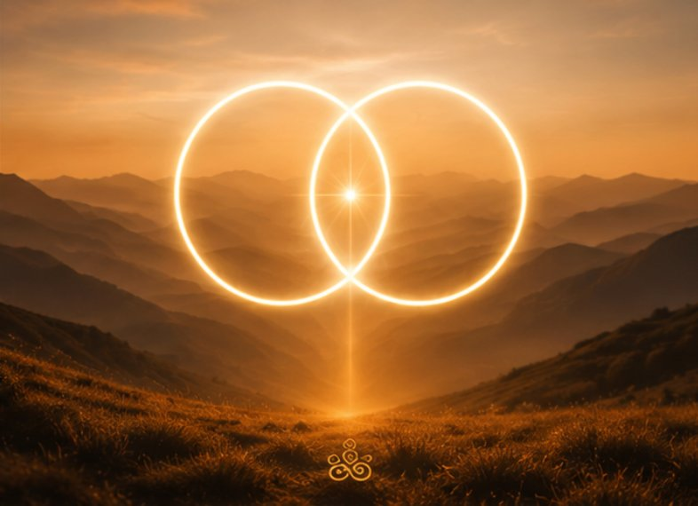

Controleer je inbox
Je ontvangt vandaag de welkomstmail met de introductie PDF en Gate 1 — jouw cadeau om direct mee te starten.
365 Gates of Awareness
Luister… en je zult je herinneren wie je was,
voordat de wereld je vertelde wie je moest zijn.
Vanaf morgen ontvang je elke ochtend één vraag — een Gate — die jouw perspectief opent, je innerlijke bewustzijn activeert en je helpt om op een andere manier naar jezelf en je leven te kijken.
Deze vragen zijn geen gewone vragen. Ze zijn ontworpen om je denkpatronen te verschuiven, je bewustzijn te verruimen, nieuwe mogelijkheden zichtbaar te maken en je terug te brengen naar wie jij écht bent.
Elke Gate opent een ander perspectief. Een shift.
Een kleine verschuiving die grote impact kan hebben.
Je eerste shift begint nu
Neem 60 seconden voor jezelf.
Word je bewust van je ademhaling. Adem één keer rustig in en uit.
Lees de vraag rustig. Kijk naar de vorm. Voel wat er van binnen beweegt.
Je hoeft niets op te lossen. Alleen bewust te worden.
"Waar reageer ik vandaag vanuit automatische patronen in plaats van bewuste keuze?"

Je ontvangt vandaag de welkomstmail met de introductie PDF en Gate 1 — jouw cadeau om direct mee te starten.
Vanaf morgen ontvang je iedere ochtend één Gate — één vraag. Lees, voel, laat zakken. Meer is niet nodig.
Je hoeft niets te forceren. Vraag na vraag, perspectief na perspectief, ontvouwt jouw bewustzijn zich vanzelf.
Boek een discovery call en ontdek hoe de SZINN Alignment Methode jou nog verder kan begeleiden.
Je eerste stap is gezet. De rest ontvouwt vanzelf —
vraag na vraag, perspectief na perspectief.